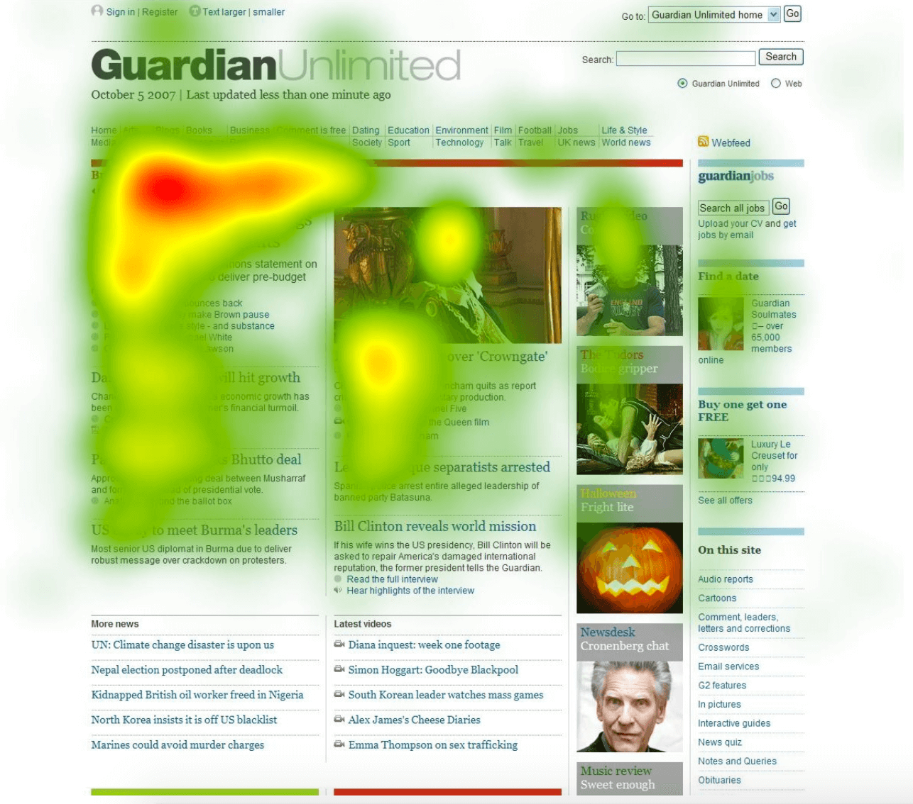
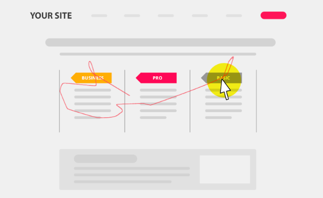

Design (Web-Analytics, Adaptive UI and UX, Web Robots, Business, ...)
F28WP Web Programming
2020-2021
Dominos
(Oct 2019)
Blind man sued Domino's over its website
The Supreme Court passed on reviewing a case from the pizza chain, which questioned whether it has to make its website and mobile app accessible for people with disabilities
Example, Heatmap
Collects data on clicks, scroll, and attention pattern of your website visitors in realtime

Web-analytic Tools
Off the shelf solutions
Google Analytics
Hotjar
Clicky
Bitly
...
